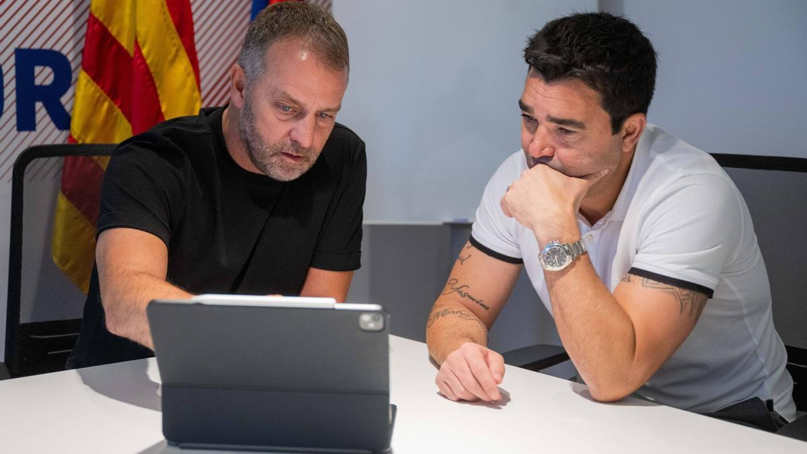
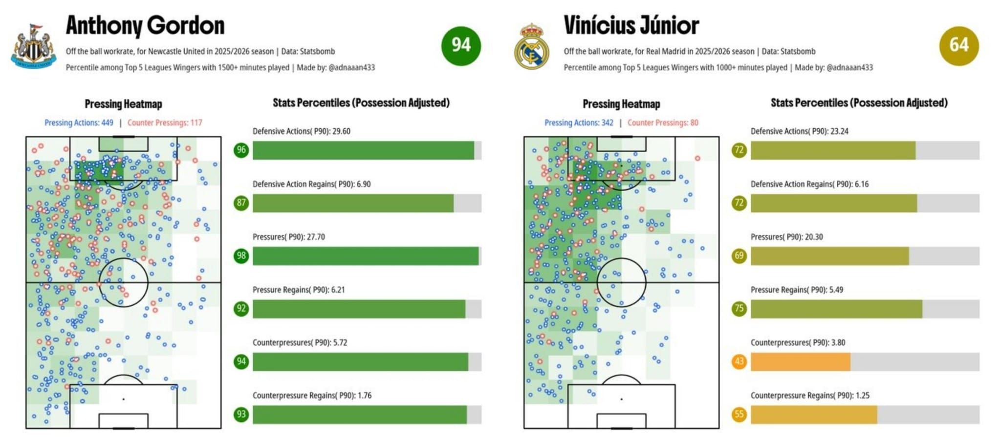
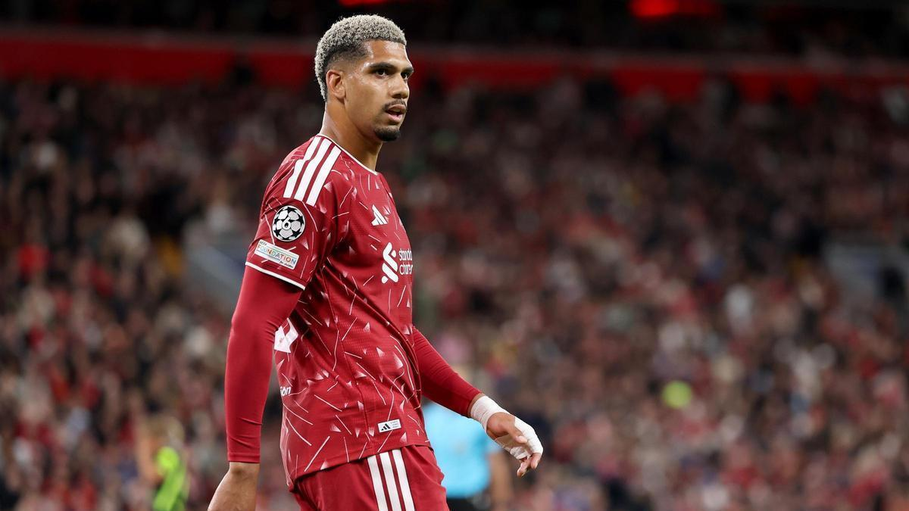

Fútbol · Opinión · Por Nacho · 12 de septiembre de 2026
Analizando la 'summeriana' del Barça

Deco y Flick, repasando el mercado de fichajes del Barça
Hace ya casi dos semanas que terminó el mercado de fichajes veraniego y en este panfleto somos más vagos que la chaqueta de un guarda, pero no os preocupéis: en este artículo vamos a analizar la "summeriana" del Barça.
Aunque en este excelente medio deportivo se haya tachado a Deco y Laporta de cocainómanos, puteros y borrachos, hay que decir que en este mercado han sacado sus dos pollas peludas a pasear. En un adelanto de acontecimientos, mi nota para este mercado sería de 8. No es un 10 porque no se ha traído un defensa ni un "9" (por mucho que ahora Raphinha se esté saliendo, pero ya hablaremos de esto).
Al turrón: los fichajes
- Dominik Livakovic (Portero, 31 años): Como segunda opción en portería es un fichajazo, aparece en los momentos más importantes como ha demostrado con Croacia, y encima llega por solo 2 millones de euros. Con este fichaje ya podemos despedirnos tranquilamente de Szczęsny.
- João Cancelo (Lateral derecho, 32 años): Poco más que decir, ya ha estado varias veces, ha sido de los mejores jugadores en su posición y lo seguirá siendo hasta que él quiera. Le ha salido una competencia feroz con la irrupción de Xavi Espart, pero el portugués jugará y estará a la altura de las circunstancias. Llega libre tras rescindir su contrato con el Al-Hilal (patriotada gorda).
- Rodrigo Hernández (Pivote, 30 años): Jajajaja, que os voy a contar, balón de oro, mundial y mejor jugador de este, pues el mejor pivote del mundo y solo por 60 millones, yo habría soltado 150 millones y me parecería poco. Se acabó lo de ver al pussy holandés dando vueltas como una peonza y no jugando el tramo más importante de la temporada para jugar con Holanda. El puto Rodri, tios, aún no me creo que sea real, un líder dentro y fuera del campo, soy gay.
- Karim Adeyemi (Extremo derecho, 24 años): He de decir que soy el primero que no me daba muy buena espina este fichaje, pero viéndole en este comienzo de temporada a mi ya me ha cerrado la boca, aún así es un gran fichaje en términos económicos, 22 millones de euros y se le puede sacar una buena tajada si explota y ves que no lo necesitas en un futuro, además complementa la delantera bastante bien. Flick le conoce de la selección de alemania y el sabe mas que todos nosotros y sobretodo yo, que tengo 22 años y se me cae la baba cuando veo una gorda en el gimnasio con unas nike pro. Con que sea como Rashford pero en bueno nos podemos dar un canto en los dientes.
- Jesse Bisiwu (Extremo izquierdo, 18 años): Por lo que le he visto en la pretemporada contra equipuchos puedo afirmar que estamos ante el nuevo Dembele (el actual), 8.5 millones de euros, proveniente del Brujas, rápido, con regate y gol, puede ser un gran desatascador de partidos y un gran jugador para rotar contra el Levante de turno, muy buena pinta.
- Hamza Abdelkarim (Delantero centro, 18 años): Mi pedrada personal, este será nuestro Haaland, se le caen los goles y en pretemporada lo hemos visto, en cuanto Flick le de minutos lo vamos a ver seguro, 1.5 millones de euros y a saber cual será su valor en un par de años como salga bien, ya ha debutado en un mundial con Egipto.
- Gabriel Jesús (Delantero centro, 29 años): Un fichaje que no me generó una buena confianza desde un principio por su historial de lesiones, pero por 10 millones es una operación que no te puede salir mal económicamente, además ya se ha estrenado con el gol en champions ante el Feyenoord y no hizo doblete por el larguero. En 2019 la de pajas que me habré hecho pensando en que le fichábamos, como de un rendimiento como el de Aubameyang es un fichajazo. Gran complemento para la delantera y buena competencia que hay arriba, entre Raphinha que es Van Basten ahora, este y Hamza no debemos tener preocupaciones por el gol esta temporada.
- Anthony Gordon (Extremo izquierdo, 25 años): Soy un mariconazo y me las como dobladas, el inglés es justo lo que necesitabamos, jugador joven, con hambre de ganar, capacidad para asistir y pronto le veremos meter goles. 80 millones y barato me parece viendo las morteradas que se han pagado en este mercado, este animal competitivo va a ser una cosa muy tocha en este Barça, los que no confiaron en él en un principio van a mamar pene británico hasta el final de sus miserables días, me alegro. Adjunto foto de porque Flick y Deco saben lo que se necesita para ganar todos los títulos.

Salidas
No ha sido un mercado con una salida bomba ni con una gran recaudación; la mayoría son ventas de canteranos, pero aun así hay cosas que destacar.
- Ferrán Torres (Delantero centro, 26 años): Si se quería ir poco se puede decir, gracias por todo y tal, pero este después del gol contra Argentina se cree Roy Maakay y para nada lo es, le vendrá bien una bajada de humos, eso sí, como nos meta en Champions me haré ermitaño y no volveréis a saber nada de mí en meses. 50 millones de euros frescos para las arcas.
- Ansu Fati (Extremo izquierdo, 23 años): 11 millones de euros y por fin nos lo sacamos de encima, que le vaya bien porque este crío nos hizo felices en una de las peores épocas del club. Salida necesaria.
- Tommy Marqués (Pivote, 19 años): Ha jugado cuatro ratos y le hemos sacado por 11 millones al SC Braga, pues ok, muy buena operación, nada más que decir.
- Héctor Fort (Lateral derecho, 20 años): 8.5 millones por este tio que va con unas cadenas que parece anuel, me da la impresión de ser más tonto que un bocao en la polla pero el chaval bueno es un rato, ojo como explote con la Real Sociedad.
- Guille Fernández (Mediocentro, 18 años): Iba a jugar lo mismo que yo y lo hemos vendido por 4 millones al Mallorca, seguramente se saldrá en segunda división y no nos sorprenderá.
- Álvaro Cortés (Defensa central, 21 años): Ha sido un coladero en pretemporada y Flick le ha largado a las primeras de cambio, 3.5 millones de euros.
- Iñaki Peña (Portero, 27 años): A Grecia por 3 millones de euros, no dio la talla y punto.
- Robert Lewandowski (Delantero centro, 37 años): Marchó libre a EEUU, que puta leyenda, vino en el peor momento y se va siendo leyenda, ama más al Barça jugando en Europa League que al Bayern ganando un sextete con ellos, imposible quererle más.
- Jofre Torrents (Lateral izquierdo, 19 años): Marchó libre al Ajax y su posición ya estaba más que cubierta, que le vaya bien.
- Toni Fernández (Mediocentro ofensivo, 18 años): Pintaba que iba a ser grande pero de momento nada, veremos que tal le va en el Venezia.
- Áron Yaakobishvili (Portero, 20 años): Al Almería porque aquí iba a jugar entre poco y nada, no hay mucho más que contar.
- Diego Kochen (Portero, 20 años): Me acabo de enterar que marchó cedido a Dinamarca, jaja.
- Marc Casadó (Pivote, 22 años): La ratada que nos ha hecho este pavo, dos meses buenos y ya, muchas gracias por todo pero si tan culé eras haberte ido dejando pasta y no como lo has hecho, calvo.
- Marc-André ter Stegen (Portero, 34 años): Estamos entrando ya en la recta final de 2026 y todavía tenemos en nómina a este muerto, en Holanda ya se están dando cuenta del asco que da, no para un taxi, washed.
- Ronald Araújo (Defensa central, 27 años): Este en la liga española era top burros y en la mierda de la liga inglesa es Nesta, os juro que es real, las langostas están flipando con este tio, lo mejor que nos puede pasar es que el Liverpool nos de 55 millones por este antes de que la cague y se echen para atrás, se acabó lo de estar con el culo apretado viendo jugar a este en champions.

¿Qué podemos esperar de este Barça?
Con este mercado, ¿qué podemos esperar de este Barça? Pues muchos goles, eso está claro, un control en el centro del campo brutal con Rodri, y una cagalera con la defensa en cuanto Cubarsí pille un resfriado.
El 9 hay que ver como avanza todo hasta invierno, pero ahora mismo es más necesario reforzar la defensa que la delantera, con Raphinha de delantero, Gabriel Jesús y Hamza estamos bien reforzados, los extremos con Lamine Yamal, Anthony Gordon, Adeyemi y Bisiwu está bastante completo, siempre puedes traer algo más pero la pasta debe ir a la defensa que solo cuentas con Cubarsí, Christensen (que a ver cuanto dura sano) y Gerard Martín, tienes al multiusos Eric García pero mejor que juegue de lateral que sino tenemos que tragarnos al trenzas de Koundé, que es el jugador que más asco está dando sin dudas.
Para la posición de 9, siempre hay que mirar a lo grande, Haaland o Julián Álvarez si de verdad tenemos pasta, sino una opción Tresoldi también puede estar bien. La defensa me genera más dudas, que centrales izquierdos hay que no sean muy caros y no sean unos jumentos, sonaba Lukeba, pero negro y francés me da cagalera solo de pensarlo. Confiemos en que Deco y Flick nos traerán los jugadores que faltan para confeccionar este equipazo.